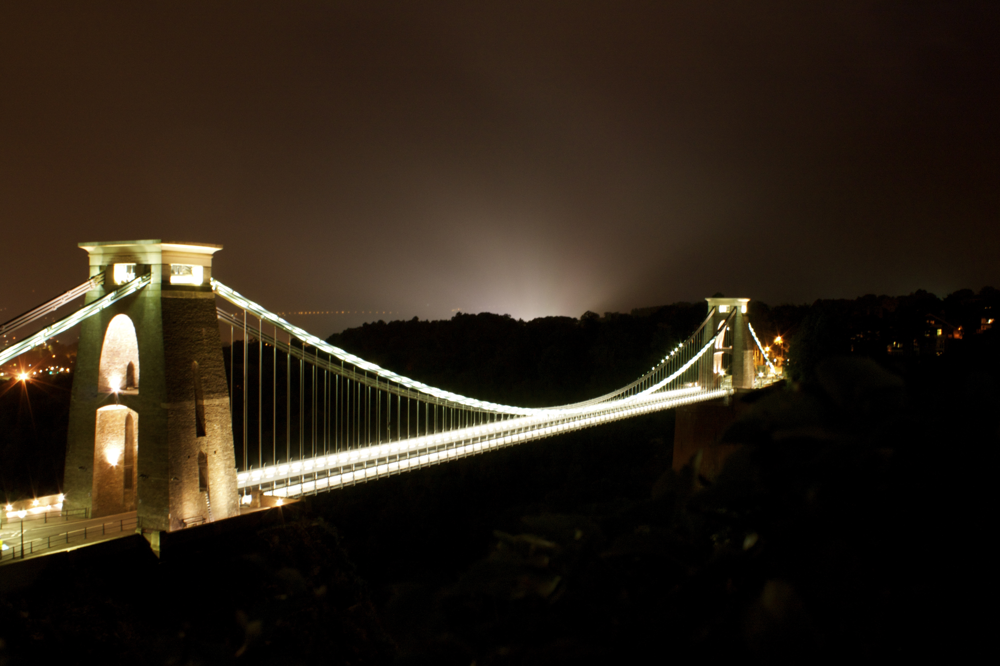

The history of Suspension bridges spans hundreds of year. The Clifton Suspension Bridge which opened in 1864, spanning the Avon Gorge and the River Avon, linking Clifton in Bristol to Leigh Woods in North Somerset, England. The bridge is built to a design by William Henry Barlow and John Hawkshaw, based on an earlier design by Isambard Kingdom Brunel.
